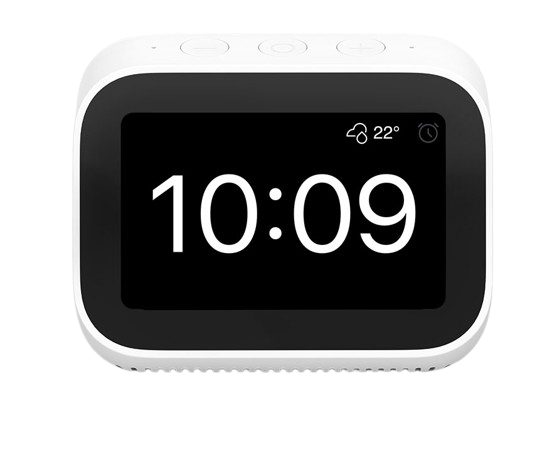

Portfolio
Ich habe bereits mehrere Projekte umgesetzt, wie zum Beispiel die Organisation eines Git- und Markdown-Workshops, bei dem ich den Teilnehmern die Grundlagen von Versionskontrolle mit Git und der Nutzung von Markdown für Dokumentationen näherbrachte.
Ein weiteres Projekt ist die SmartClock, eine intelligente Uhr, die nicht nur die Zeit anzeigt, sondern auch die Luftqualität überwacht, ausgestattet mit Sensoren für CO₂, Temperatur und Luftfeuchtigkeit.